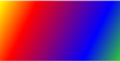
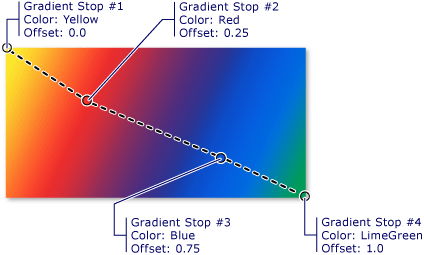
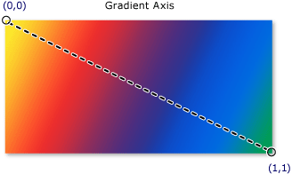
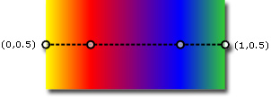
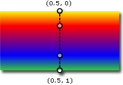
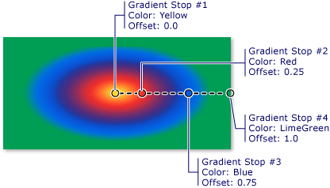
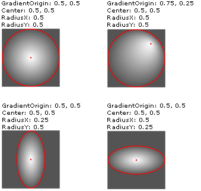

Общие сведения о закраске сплошным цветом и градиентом
В этом разделе описывается использование SolidColorBrush, LinearGradientBrush, и RadialGradientBrush объекты для закрашивания сплошным цветом, линейным градиентом и радиальным градиентом.
Закрашивание области сплошным цветом
Одна из самых распространенных операций на любой платформе — закрасить область сплошным Color. Для выполнения этой задачи Windows Presentation Foundation (WPF) предоставляет SolidColorBrush класса. В следующих разделах описаны различные способы закрашивания с SolidColorBrush.
Использование SolidColorBrush в XAML
Чтобы закрасить область сплошным цветом в XAML, используйте один из следующих вариантов.
Выберите стандартную сплошную цветную кисть по имени. Например, можно задать кнопки Background «Red» или «MediumBlue». Список других стандартных кистей сплошного цвета, см. в разделе статические свойства класса Brushes класса. Пример.
<!-- This button's background is painted with a red SolidColorBrush, described using a named color. --> <Button Background="Red">A Button</Button>Выберите цвет из 32-разрядной цветовой палитры, указав насыщенность красной, зеленой и синей составляющих для смешения в сплошной цвет. Формат для указания цвета из 32-разрядной палитры — #rrggbb, где rr — шестнадцатеричное число из двух цифр, представляющее относительное количество красного цвета, gg — зеленого, bb — синего. Кроме того, цвет можно указать в формате #aarrggbb, где aa представляет альфа-канал, или прозрачность, цвета. Этот подход позволяет создавать частично прозрачные цвета. В следующем примере Background из Button присваивается полностью непрозрачному красному, с помощью шестнадцатеричного формата.
<!-- This button's background is painted with a red SolidColorBrush, described using hexadecimal notation. --> <Button Background="#FFFF0000">A Button</Button>Используйте синтаксис тега свойства для описания SolidColorBrush. Этот синтаксис требует более подробного описания, но позволяет указать дополнительные параметры, например непрозрачность кисти. В следующем примере Background свойства двух Button элементы задаются равными полностью непрозрачному красному. Цвет первой кисти описан с использованием имени стандартного цвета. Цвет второй кисти описан с помощью шестнадцатеричного формата.
<!-- Both of these buttons' backgrounds are painted with red SolidColorBrush objects, described using object element syntax. --> <Button>A Button <Button.Background> <SolidColorBrush Color="Red" /> </Button.Background> </Button> <Button>A Button <Button.Background> <SolidColorBrush Color="#FFFF0000" /> </Button.Background> </Button>
Закрашивание с использованием SolidColorBrush в коде
Чтобы закрасить область сплошным цветом в коде, используйте один из следующих вариантов.
Используйте одну из стандартных кистей, предоставляемых Brushes класса. В следующем примере Background из Button присваивается Red.
Button myButton = new Button(); myButton.Content = "A Button"; myButton.Background = Brushes.Red;Создание SolidColorBrush и задайте его Color свойства с помощью Color структуры. Можно использовать стандартный цвет в Colors класса или создать Color с помощью статического FromArgb метод.
В следующем примере показано, как задать Color свойство SolidColorBrush с помощью предопределенного цвета.
Button myButton = new Button(); myButton.Content = "A Button"; SolidColorBrush mySolidColorBrush = new SolidColorBrush(); mySolidColorBrush.Color = Colors.Red; myButton.Background = mySolidColorBrush;
Статический FromArgb используется для задания значения альфа, красного, зеленого и синего цвета. Обычный диапазон для этих значений — от 0 до 255. Значение 0 указывает, что цвет полностью прозрачен, а значение 255 — что он полностью непрозрачен. Аналогично значение 0 для красного цвета указывает, что цвет не имеет красной составляющей, а значение 255 означает, что цвет имеет максимальную насыщенность красной составляющей. В следующем примере цвет кисти описан путем указания значения альфа и значений красного, зеленого и синего цветов.
Button myButton = new Button();
myButton.Content = "A Button";
SolidColorBrush mySolidColorBrush = new SolidColorBrush();
mySolidColorBrush.Color =
Color.FromArgb(
255, // Specifies the transparency of the color.
255, // Specifies the amount of red.
0, // specifies the amount of green.
0); // Specifies the amount of blue.
myButton.Background = mySolidColorBrush;
Другие способы задания цвета см. в разделе Color справочника.
Закрашивание области с помощью градиента
Градиентные кисти закрашивают область разными цветами, которые переходят из одного в другой по некоторой оси. Их можно использовать для создания картины света и теней, которая придает элементам управления трехмерный вид. Их также можно использовать для имитации стекла, хрома, воды и других гладких поверхностей. WPF предоставляет два типа градиентных кистей: LinearGradientBrush и RadialGradientBrush.
Линейные градиенты
Объект LinearGradientBrush закрашивает область градиентом, определенным вдоль линии, ось градиента. Укажите цвета градиента и их расположение вдоль оси градиента с помощью GradientStop объектов. Ось градиента можно изменить, чтобы создать горизонтальный или вертикальный градиент, или обратить направление градиента. Ось градиента описана в следующем разделе. По умолчанию создается диагональный градиент.
В следующем примере показан код, создающий линейный градиент с четырьмя цветами.
<!-- This rectangle is painted with a diagonal linear gradient. -->
<Rectangle Width="200" Height="100">
<Rectangle.Fill>
<LinearGradientBrush StartPoint="0,0" EndPoint="1,1">
<GradientStop Color="Yellow" Offset="0.0" />
<GradientStop Color="Red" Offset="0.25" />
<GradientStop Color="Blue" Offset="0.75" />
<GradientStop Color="LimeGreen" Offset="1.0" />
</LinearGradientBrush>
</Rectangle.Fill>
</Rectangle>
Rectangle diagonalFillRectangle = new Rectangle();
diagonalFillRectangle.Width = 200;
diagonalFillRectangle.Height = 100;
// Create a diagonal linear gradient with four stops.
LinearGradientBrush myLinearGradientBrush =
new LinearGradientBrush();
myLinearGradientBrush.StartPoint = new Point(0,0);
myLinearGradientBrush.EndPoint = new Point(1,1);
myLinearGradientBrush.GradientStops.Add(
new GradientStop(Colors.Yellow, 0.0));
myLinearGradientBrush.GradientStops.Add(
new GradientStop(Colors.Red, 0.25));
myLinearGradientBrush.GradientStops.Add(
new GradientStop(Colors.Blue, 0.75));
myLinearGradientBrush.GradientStops.Add(
new GradientStop(Colors.LimeGreen, 1.0));
// Use the brush to paint the rectangle.
diagonalFillRectangle.Fill = myLinearGradientBrush;
Этот код создает следующий градиент.

Примечание. Примерах с градиентом в этом разделе используется система координат по умолчанию для определения начальной и конечной точек. Система координат по умолчанию определяется относительно ограничивающего прямоугольника: 0 указывает, что 0 процентов ограничивающего прямоугольника, а 1 указывает 100 процентов ограничивающего прямоугольника. Эту систему координат можно изменить, задав MappingMode в соответствии с значением Absolute. Абсолютная система координат не привязана к ограничивающему прямоугольнику. Значения интерпретируются непосредственно в локальной области.
GradientStop Основной строительный блок градиентной кисти. Ограничение градиента задает Color в Offset вдоль оси градиента.
Ступень градиента Color свойство задает цвет градиента. Можно установить цвет с помощью стандартного цвета (предоставляемые Colors класс) или путем указания значений ScRGB или ARGB. В XAML для описания цвета можно также использовать шестнадцатеричный формат. Дополнительные сведения см. в разделе Color структуры.
Ступень градиента Offset свойство определяет положение цвета ограничения градиента на оси градиента. Значением offset является Double , в диапазоне от 0 до 1. Чем ближе значение смещения ограничения градиента к 0, тем ближе цвет находится к началу градиента. Чем ближе значение смещения градиента к 1, тем ближе цвет находится к окончанию градиента.
Цвет каждой точки между ограничениями градиента подчиняется закону линейной интерполяции как сочетание цветов, заданных двумя ограничивающими положениями градиента. На следующем рисунке показаны ограничения градиента, используемые в предыдущем примере. Кружками отмечены положения ограничений градиента, а пунктирной линией обозначена ось градиента.

Первое ограничение градиента задает желтый цвет в точке со смещением 0.0. Второе ограничение градиента задает красный цвет в точке со смещением 0.25. Цвета между этими двумя ограничениями постепенно меняются от желтого к красному при движении слева направо вдоль оси градиента. Третье ограничение градиента задает синий цвет в точке со смещением 0.75. Цвета между вторым и третьим ограничениями градиента постепенно меняются от красного к синему. Четвертое ограничение градиента задает зеленый цвет в точке со смещением 1.0. Цвета между третьим и четвертым ограничениями градиента постепенно меняются от синего к зеленому.
Ось градиента
Как было сказано ранее, ограничения градиента кисти линейного градиента располагаются вдоль линии, называемой осью градиента. Можно изменить ориентацию и размер строки, с помощью кисти StartPoint и EndPoint свойства. Управляя кисти StartPoint и EndPoint, можно создавать горизонтальные и вертикальные градиенты, обращать направление градиента, уменьшать распространение градиента и многое другое.
По умолчанию кисти линейного градиента в StartPoint и EndPoint задаются относительно закрашиваемой области. Точка (0, 0) представляет верхний левый угол закрашиваемой области, а точка (1, 1) — правый нижний угол. Значение по умолчанию StartPoint из LinearGradientBrush — (0,0) и значение по умолчанию EndPoint — (1,1), при котором создается Диагональный градиент, начиная с верхнего левого угла и заканчивающийся в правом нижнем углу закрашиваемой области. На следующем рисунке показана ось градиента линейной градиентной кисти имеет значения по умолчанию StartPoint и EndPoint.

Приведенный ниже показано, как создать горизонтальный градиент, указав кисти StartPoint и EndPoint. Обратите внимание на то, что градиента здесь такие же, как показано в предыдущих примерах; При простом изменении StartPoint и EndPoint, градиент был изменен с диагонального на горизонтальную.
<!-- This rectangle is painted with a horizontal linear gradient. -->
<Rectangle Width="200" Height="100">
<Rectangle.Fill>
<LinearGradientBrush StartPoint="0,0.5" EndPoint="1,0.5">
<GradientStop Color="Yellow" Offset="0.0" />
<GradientStop Color="Red" Offset="0.25" />
<GradientStop Color="Blue" Offset="0.75" />
<GradientStop Color="LimeGreen" Offset="1.0" />
</LinearGradientBrush>
</Rectangle.Fill>
</Rectangle>
Rectangle horizontalFillRectangle = new Rectangle();
horizontalFillRectangle.Width = 200;
horizontalFillRectangle.Height = 100;
// Create a horizontal linear gradient with four stops.
LinearGradientBrush myHorizontalGradient =
new LinearGradientBrush();
myHorizontalGradient.StartPoint = new Point(0,0.5);
myHorizontalGradient.EndPoint = new Point(1,0.5);
myHorizontalGradient.GradientStops.Add(
new GradientStop(Colors.Yellow, 0.0));
myHorizontalGradient.GradientStops.Add(
new GradientStop(Colors.Red, 0.25));
myHorizontalGradient.GradientStops.Add(
new GradientStop(Colors.Blue, 0.75));
myHorizontalGradient.GradientStops.Add(
new GradientStop(Colors.LimeGreen, 1.0));
// Use the brush to paint the rectangle.
horizontalFillRectangle.Fill = myHorizontalGradient;
На приведенном ниже рисунке показан созданный градиент. Ось градиента отмечена пунктирной линией, а ограничения градиента отмечены кружками.

В следующем примере показано, как создать вертикальный градиент.
<!-- This rectangle is painted with a vertical gradient. -->
<Rectangle Width="200" Height="100">
<Rectangle.Fill>
<LinearGradientBrush StartPoint="0.5,0" EndPoint="0.5,1">
<GradientStop Color="Yellow" Offset="0.0" />
<GradientStop Color="Red" Offset="0.25" />
<GradientStop Color="Blue" Offset="0.75" />
<GradientStop Color="LimeGreen" Offset="1.0" />
</LinearGradientBrush>
</Rectangle.Fill>
</Rectangle>
Rectangle verticalFillRectangle = new Rectangle();
verticalFillRectangle.Width = 200;
verticalFillRectangle.Height = 100;
// Create a vertical linear gradient with four stops.
LinearGradientBrush myVerticalGradient =
new LinearGradientBrush();
myVerticalGradient.StartPoint = new Point(0.5,0);
myVerticalGradient.EndPoint = new Point(0.5,1);
myVerticalGradient.GradientStops.Add(
new GradientStop(Colors.Yellow, 0.0));
myVerticalGradient.GradientStops.Add(
new GradientStop(Colors.Red, 0.25));
myVerticalGradient.GradientStops.Add(
new GradientStop(Colors.Blue, 0.75));
myVerticalGradient.GradientStops.Add(
new GradientStop(Colors.LimeGreen, 1.0));
// Use the brush to paint the rectangle.
verticalFillRectangle.Fill = myVerticalGradient;
На приведенном ниже рисунке показан созданный градиент. Ось градиента отмечена пунктирной линией, а ограничения градиента отмечены кружками.

Радиальные градиенты
Как и LinearGradientBrush, RadialGradientBrush закрашивает область цветами, которые вместе вдоль оси. В предыдущих примерах показано, что ось кисти линейного градиента является прямой линией. Ось кисти радиального градиента определяется кругом. Цвета меняются в разные стороны от точки начала.
В следующем примере кисть радиального градиента используется для закрашивания внутренней части прямоугольника.
<!-- This rectangle is painted with a diagonal linear gradient. -->
<Rectangle Width="200" Height="100">
<Rectangle.Fill>
<RadialGradientBrush
GradientOrigin="0.5,0.5" Center="0.5,0.5"
RadiusX="0.5" RadiusY="0.5">
<GradientStop Color="Yellow" Offset="0" />
<GradientStop Color="Red" Offset="0.25" />
<GradientStop Color="Blue" Offset="0.75" />
<GradientStop Color="LimeGreen" Offset="1" />
</RadialGradientBrush>
</Rectangle.Fill>
</Rectangle>
RadialGradientBrush myRadialGradientBrush = new RadialGradientBrush();
myRadialGradientBrush.GradientOrigin = new Point(0.5,0.5);
myRadialGradientBrush.Center = new Point(0.5,0.5);
myRadialGradientBrush.RadiusX = 0.5;
myRadialGradientBrush.RadiusY = 0.5;
myRadialGradientBrush.GradientStops.Add(
new GradientStop(Colors.Yellow, 0.0));
myRadialGradientBrush.GradientStops.Add(
new GradientStop(Colors.Red, 0.25));
myRadialGradientBrush.GradientStops.Add(
new GradientStop(Colors.Blue, 0.75));
myRadialGradientBrush.GradientStops.Add(
new GradientStop(Colors.LimeGreen, 1.0));
Rectangle myRectangle = new Rectangle();
myRectangle.Width = 200;
myRectangle.Height = 100;
myRectangle.Fill = myRadialGradientBrush;
На следующем рисунке показан градиент, созданный в предыдущем примере. Ограничения градиента кисти выделены. Обратите внимание, что, хотя результаты различаются, ограничения градиента в этом примере совпадают с ограничениями градиента в предыдущих примерах использования кисти линейного градиента.

GradientOrigin Указывает начальную точку оси градиента кисти радиального градиента. Ось градиента располагается от начала градиента к его окружности. Окружность градиента кисти определяется ее Center, RadiusX, и RadiusY свойства.
На следующем рисунке показано несколько радиальных градиентов с разными GradientOrigin, Center, RadiusX, и RadiusY параметры.

Кисти RadialGradientBrush с различными значениями параметров GradientOrigin, Center, RadiusX и RadiusY.
Задание прозрачных и частично прозрачных ограничений градиента
Поскольку градиента не предусмотрено свойство непрозрачности, необходимо указать альфа-канал цветов с помощью ARGB шестнадцатеричного формата в разметке или использовать Color.FromScRgb метод для создания градиента, которые являются прозрачным или полупрозрачным. Ниже описаны процедуры по созданию частично прозрачных ограничений градиента в XAML и код.
Задание непрозрачности цвета в XAML
В XAML можно использовать шестнадцатеричный формат ARGB для указания непрозрачности отдельных цветов. ARGB шестнадцатеричное представление использует следующий синтаксис:
# AA вида rrggbb
Здесь aa — двузначное шестнадцатеричное значение, используемое для указания непрозрачности цвета. rr, gg и bb — двузначные шестнадцатеричные значения, используемые для указания насыщенности красного, зеленого и синего цветов. Шестнадцатеричная цифра может принимать значения от 0 до F (сначала цифры от 0 до 9, затем буквы от A до F). Наименьшее значение — 0, наибольшее — F. Альфа-значение 00 задает полностью прозрачный цвет, а альфа-значение FF — полностью непрозрачный цвет. В следующем примере используется шестнадцатеричный формат ARGB для задания двух цветов. Первый — частично прозрачный (он имеет альфа-значение x20). Второй — полностью непрозрачный.
<Rectangle Width="100" Height="100">
<Rectangle.Fill>
<LinearGradientBrush StartPoint="0,0">
<!-- This gradient stop is partially transparent. -->
<GradientStop Color="#200000FF" Offset="0.0" />
<!-- This gradient stop is fully opaque. -->
<GradientStop Color="#FF0000FF" Offset="1.0" />
</LinearGradientBrush>
</Rectangle.Fill>
</Rectangle>
Задание непрозрачности цвета в коде
При использовании кода, статический FromArgb метод позволяет указать альфа-значение, при создании цвета. Этот метод принимает четыре параметра типа Byte. Первый параметр задает альфа-канал цвета. Другие три параметра определяют значения красного, зеленого и синего цветов. Все значения должны быть в диапазоне от 0 до 255 включительно. Значение альфа, равное 0, указывает, что цвет полностью прозрачен, а значение 255 — что он полностью непрозрачен. В следующем примере FromArgb метод используется для создания двух цветов. Первый цвет — частично прозрачный (он имеет альфа-значение x32). Второй — полностью непрозрачный.
LinearGradientBrush myLinearGradientBrush = new LinearGradientBrush();
// This gradient stop is partially transparent.
myLinearGradientBrush.GradientStops.Add(
new GradientStop(Color.FromArgb(32, 0, 0, 255), 0.0));
// This gradient stop is fully opaque.
myLinearGradientBrush.GradientStops.Add(
new GradientStop(Color.FromArgb(255, 0, 0, 255), 1.0));
Rectangle myRectangle = new Rectangle();
myRectangle.Width = 100;
myRectangle.Height = 100;
myRectangle.Fill = myLinearGradientBrush;
Кроме того, можно использовать FromScRgb метод, который можно использовать для создания цвета значения ScRGB.
Закрашивание с помощью объектов Image, Drawing, Visual и Pattern
ImageBrush, DrawingBrush, и VisualBrush классы позволяют Закраска области с помощью изображений, рисунков и визуальных элементов. Сведения о закрашивании с использованием изображений, рисунков и шаблонов см. в разделе Рисование с помощью объектов Image, Drawing и Visual.